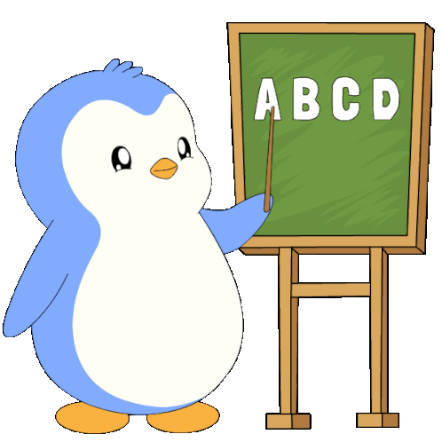

link do poczty link do pliku link do tabeli link do formularza PRZEJDŹ DO WALIDACJI STRONY kliknij aby skoczyć na środek tekstu kliknij aby skoczyć na koniec tekstu Walidacja strony HTM- Walidacja strony HTML to proces sprawdzania, czy kod źródłowy witryny jest zgodny z oficjalnymi standardami technicznymi ustalonymi przez organizację W3C (World Wide Web Consortium)
Czym jest walidator? - Walidator to program lub narzędzie służące do sprawdzania poprawności dokumentów, danych lub kodu według określonych reguł
Filip
Filip
Filip
Filip
Filip
Filip
Filip
Mączyński Mączyński Mączyński Mączyński Mączyński Mączyński (^‿^) Happy
(´• ‿´• ) Wink
(ↀ‿ↀ) Cat
(◕‿◕) Cute
(¬‿¬) Annoyed
(❛ั‿❛ั) Thai
adress 80-250 Gdańsk Tadeusza Kościuszki 101/34
Ulubiony aktor:Arnold Schwarzenegger
Ulubiony zespół muzyczny: White Widow
Data urodzenia: 05.07.2011
H2 SO4
x* x=x2
link do poczty link do pliku link do tabeli link do formularza kliknij aby skoczyć na początek tekstu kliknij aby skoczyć na koniec tekstu

Żart o Jasiu
Pani pyta children:
Jasio wstaje i mówi:
Nie Jasiu, siadaj. No dobrze powiedzcie mi teraz zwierzątko na B.
Jasio na to:
Jasiu za drzwi!!! Jasio wychodzi.
Powiedzcie mi teraz zwierzątko na C.
Żart o Szkole
- Nie rozumiem, jak jeden człowiek może robić tyle błędów?! - dziwi się polonistka, oddając pracę domowa uczniowi.
- Wcale nie jeden - odpowiada uczeń. Pomagali mi mama i tata.
Żart o pracy
Powiem ci, że ten nowy szef to chyba mało rozgarnięty.
– Czemu tak sądzisz?
– Bo dziś już trzeci raz podchodził i pytał, czemu siedzę bezczynnie.
Poniżej są trzy wyliczenia z różnymi znakami wyliczenia
Związane z informatyką
Procesor
Karta Graficzna
Ram
Obudowa
Chłodnica
Płyta główna
Poniżej są trzy numerowania z różnymi znakami numerowania
Związane z informatyką
Red=Czerwony
Blue=Niebieski
Yellow=żółty
Tablet
Telefon
Komputer
Pink=Różowy
Brown=Brązowy
Black=Czarny
Poniżej będą trzy poziomy numerowania/wyliczenia z różnymi rodzajami numerowania/wyliczenia
Związane z informatyką
Urządzenia wewnętrzne komputera
Płyta główna
Mikroprocesor
Karty rozszerzeń
Urządzenia zewnętrzne komputera
Monitor
Z lampą kineskopową
LCD
Drukarka
Igłowa
Laserowa
Atramentowe
Komendy
(/html) otwiera plik html
(/p) rozpoczyna nowy akapit
(/Body) budowa programu
Kierunki
Technik Programista
Technik Elektryk
Technik Robotyk
Aplikacje programistyczne
C++
JavaScript
NotePad++
Podst Działy Informatyki
Bazy Danych
Algorytmy i Struktury Danych
Sieci Komputerowe
Sprzęt
Monitor
Z lampą kineskopową
LCD
Drukarka
Igłowa
Laserowa
Atramentowe
link do poczty link do pliku link do tabeli link do formularza kliknij aby skoczyć na początek tekstu kliknij aby skoczyć na środek tekstu